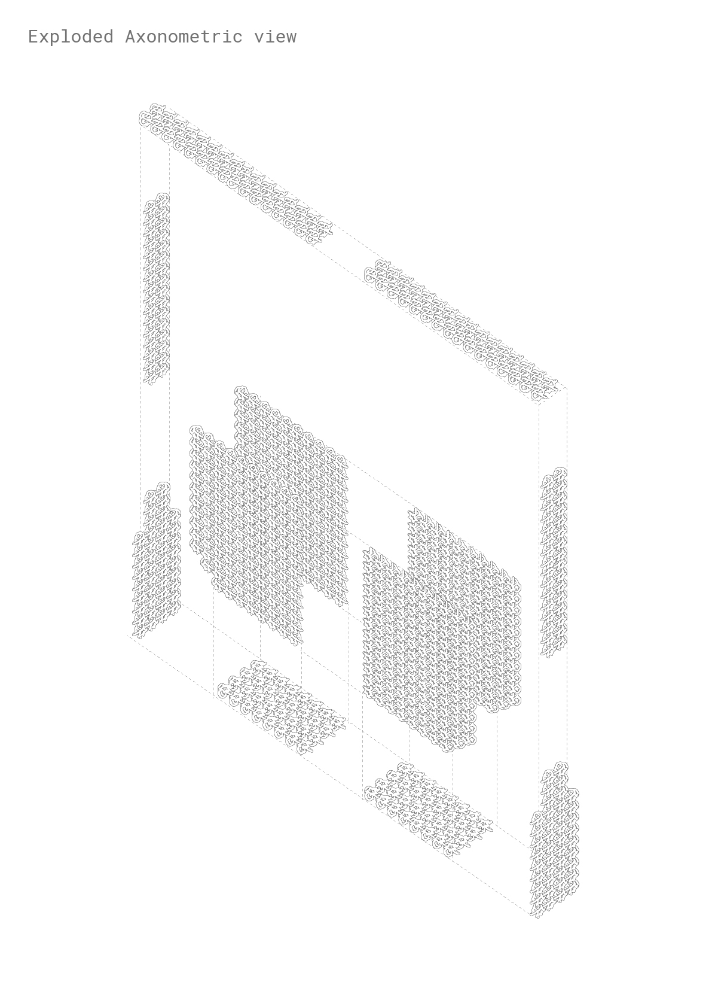
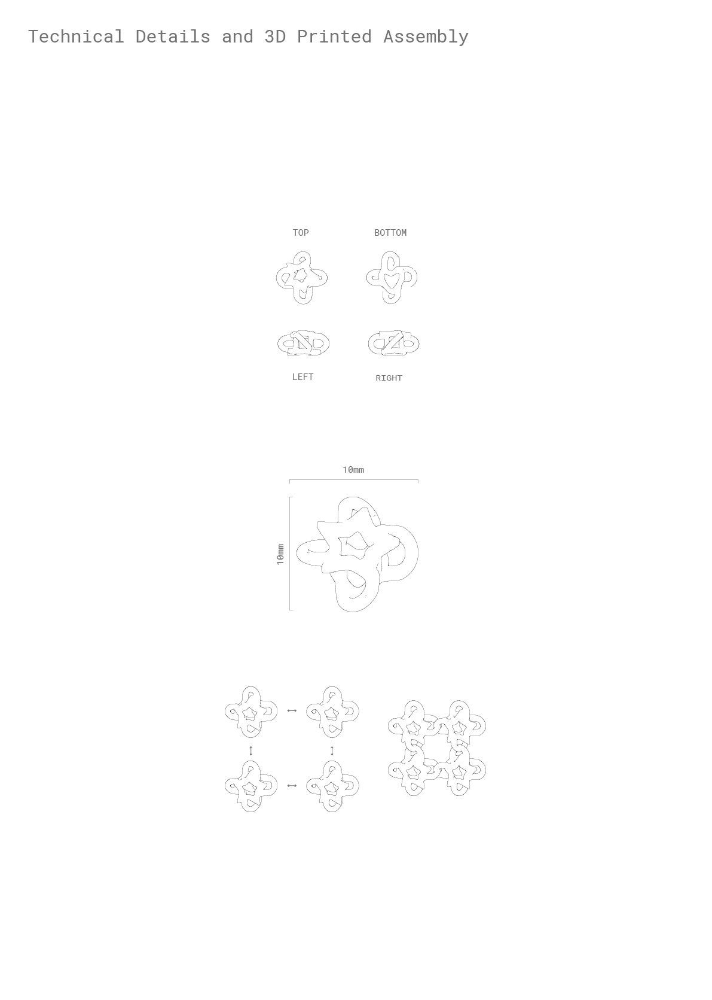
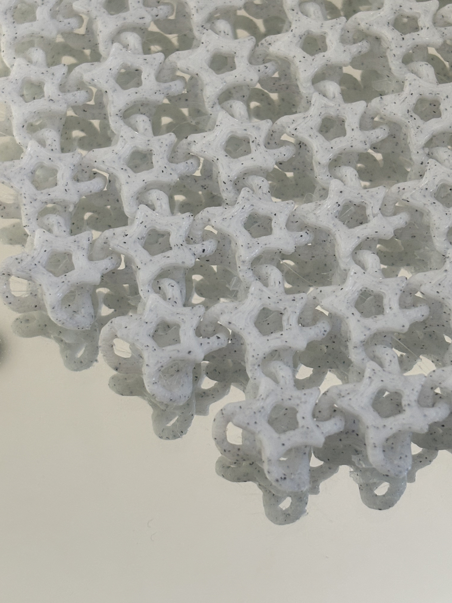
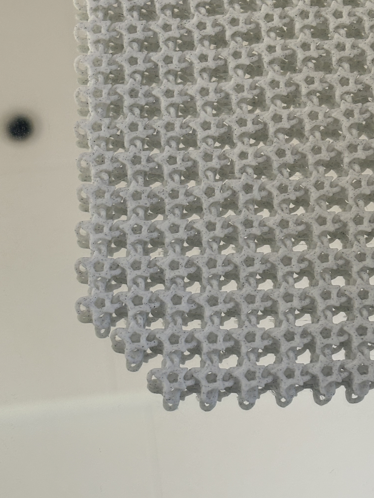
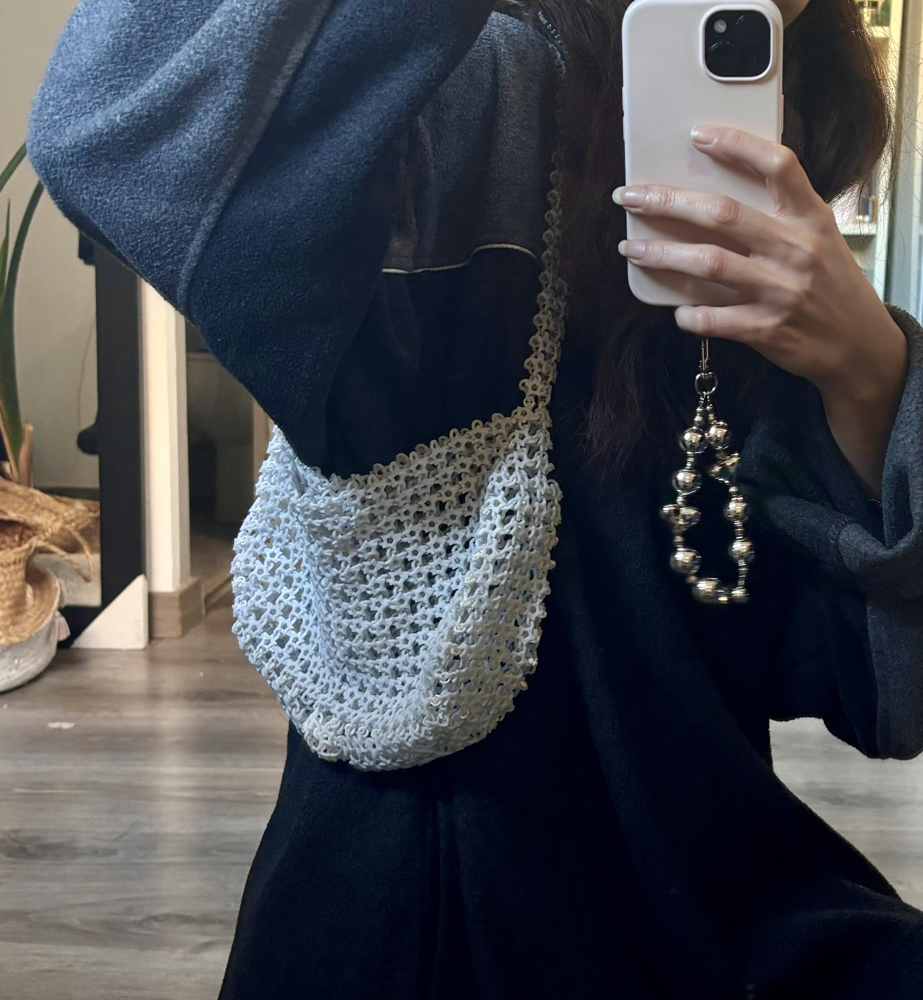
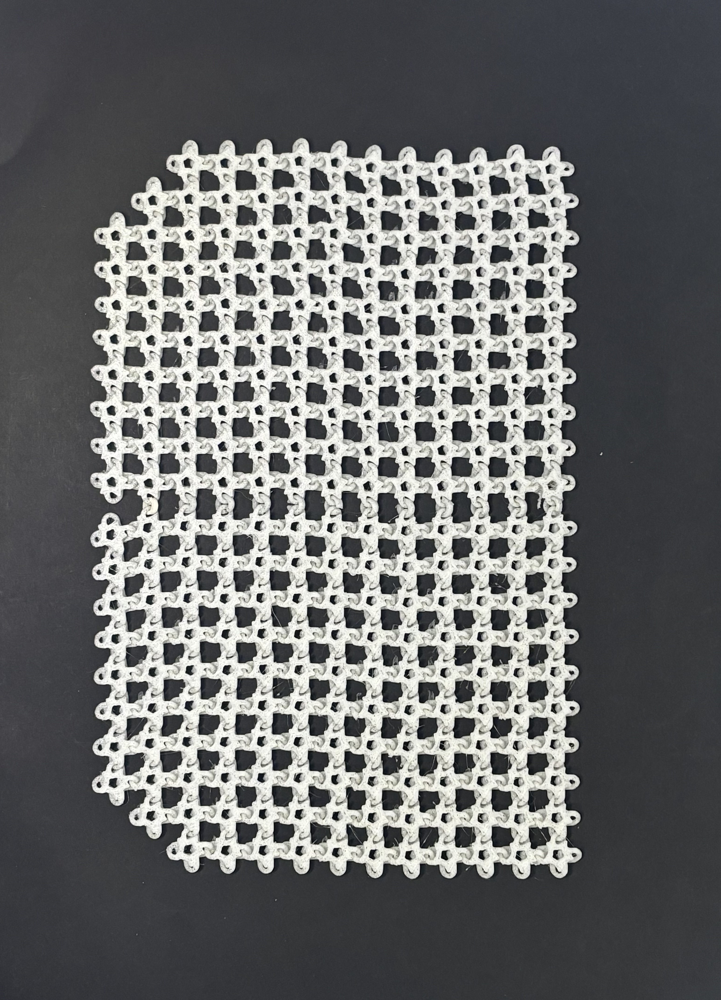
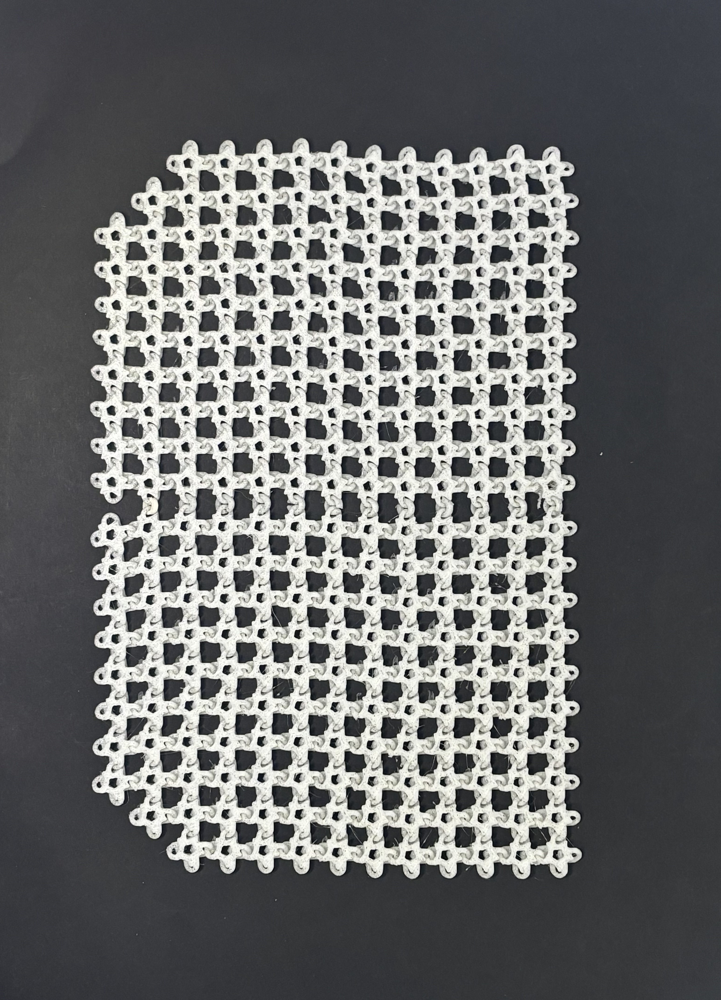
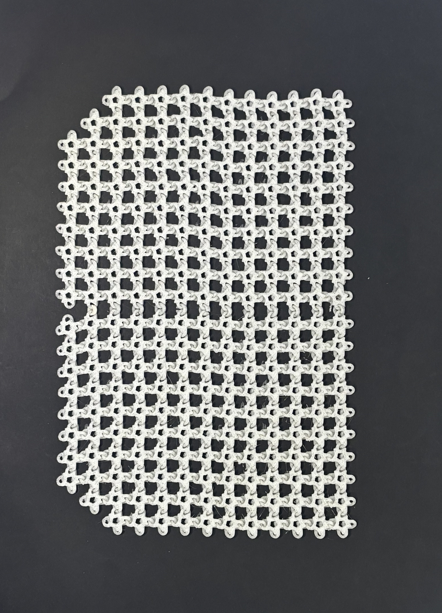

 




Syn_3D is a soft baguette bag made out of 3D printed PLA custom mesh.
Syn_3D invites people to question traditional modes of production of meshes for the textile industry by using FDM 3D printing to create more responsible, artistic designs. Each bag is a wearable art piece, merging technology and personal expression. Syn_3D tries to minimise waste and rethink how products are made. The last two pictures shown are made with an open-source mesh, not my own design. It was the first prototype and it each piece was connected with a cotton string. It was approx 10 metres of string, mixed between used shoes strings and dyed purple string.